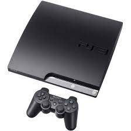

Ma passion pour les jeux vidéos à commencer depuis jeune avec le jeu GTA San Andreas sur la PSP(PlayStation Portable)

C'est un jeu de tir à la troisième personne, de conduite et d'action d'aventure en monde ouvert. Celui-ci permet de faire une vie alternative et d'être dans un monde libre
Ensuite je suis passer sur Nintendo pour jouer à de petits jeux avec mes cousins.
On a découvert le jeu BomberMan :
Bomberman est une série de jeux vidéo créé par Hudson Soft où le joueur incarne un poseur de bombes, le but étant de faire exploser les adversaires/ennemis pour gagner. Le jeu a connu un grand succès, surtout grâce à son mode multijoueur qui, suivant les machines, permet de jouer jusqu'à une dizaine de personnes en même temps.
C'est ensuite le passage à la playstation 2 et au jeu call of duty !
J'ai surtout jouer à ce jeu en mode Zombie qui est un mode spécifique ou l'on doit survivre fasse à des hordre de zombie qui apparraisent, par vague avec un niveau de difficulté croissant.
Puis c'est enfin le grand passage à la Playstation 3 qui fais partie des consoles de jeux les plus vendu dans le monde avec 87,4 million d'exemplaire vendu.
Sur cette console j'ai pu jouer à énormément de jeux tels que :
Call of duty black ops 2:
GTA 5: